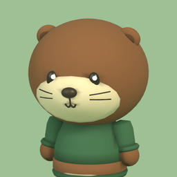
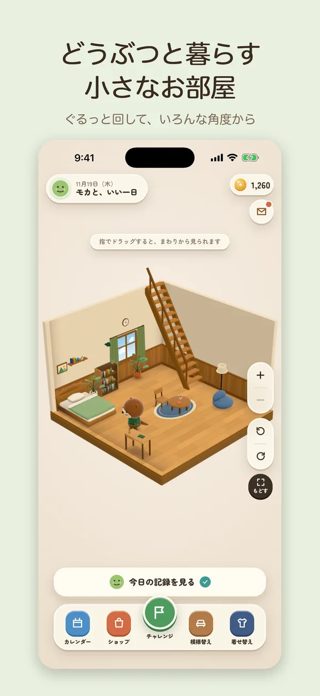
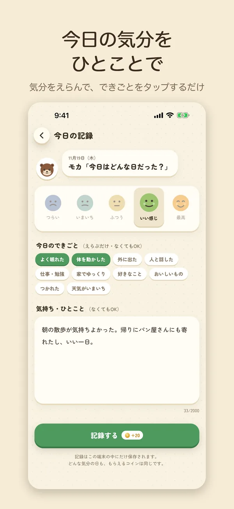
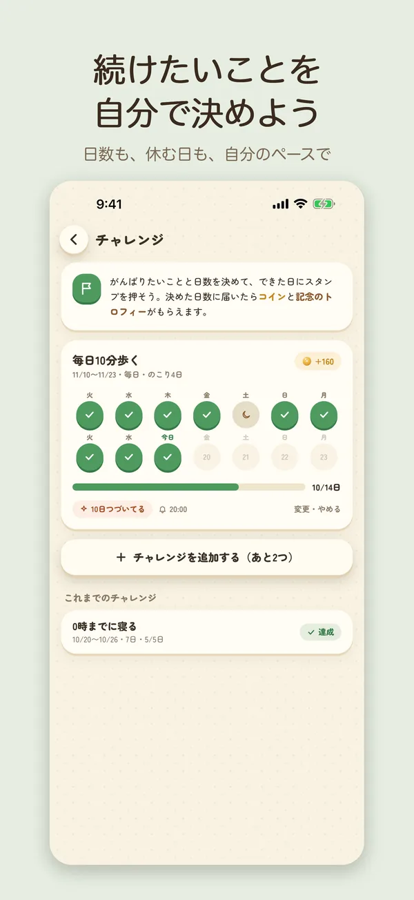
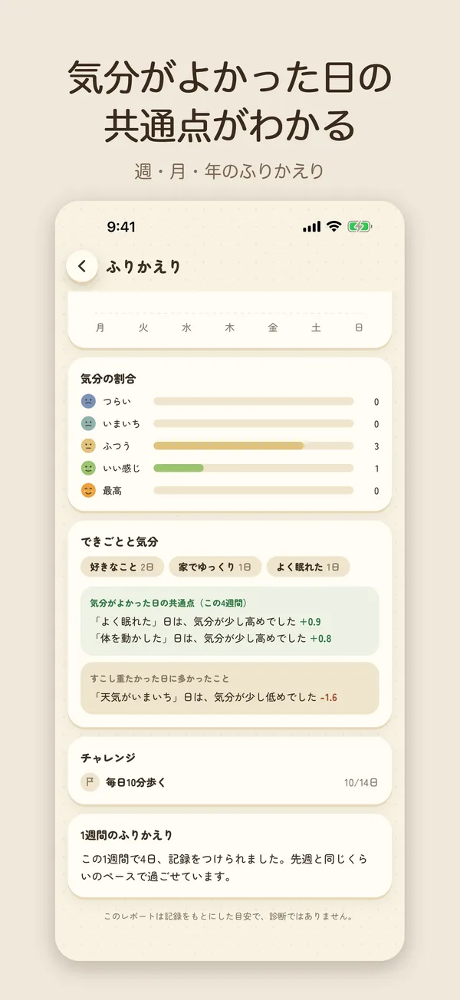
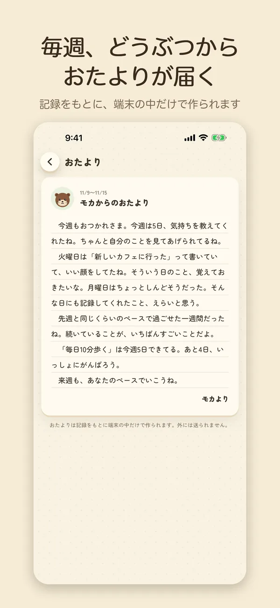
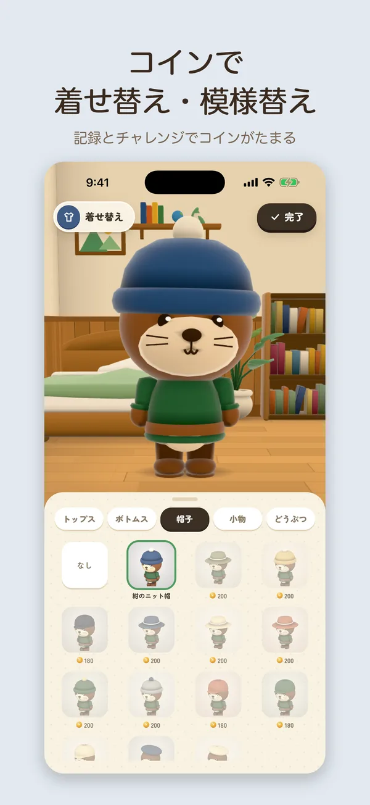
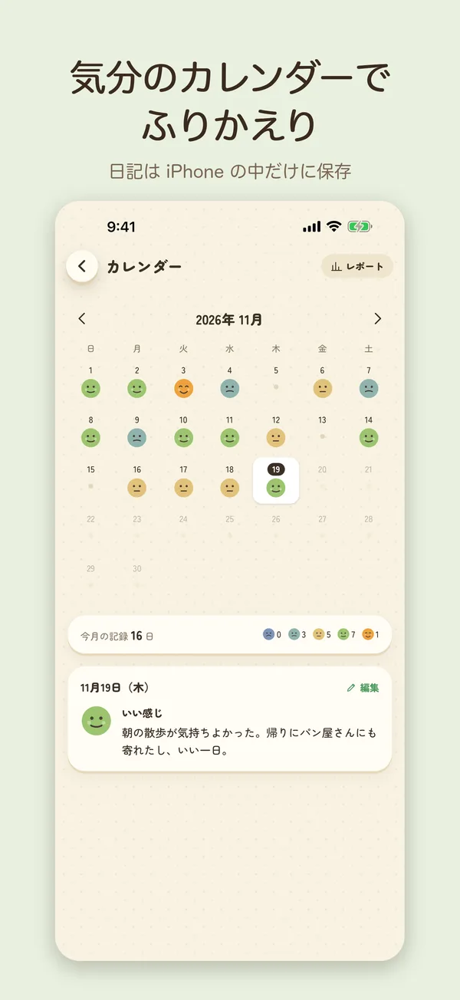

ひとこと日記今日の気分をえらぶだけ。
続けるほど、お部屋がにぎやかに。







← スワイプして見る →
5つの顔からえらぶだけ。書きたい日は、ひとこと日記も。
「毎日10分歩く」など、日数も自分で決めて、できた日にスタンプ。
記録するとコインがたまる。家具や服を集めて、自分だけのお部屋に。
1日1分、
自分の気持ちに目を向ける。
iPhone（iOS 15 以上）・日本語
はい。すべての機能を無料で使えます。
勝手に流れる広告はありません。アプリの中で使えるコインがほしいときに、自分で選んで見る動画広告だけです（1日3回まで）。
送られません。気分の記録・日記・チャレンジは、お使いの iPhone の中だけに保存されます。運営者が見ることはなく、広告にも使われません。
iPhone のバックアップ（iCloud バックアップまたはパソコン）から新しい iPhone を復元すると引きつがれます。アプリを消すと、iPhone の中の記録も消えます。
アプリの「マイページ」で、通知の種類ごとにオン・オフや時刻を変えられます。
いいえ。日々の気分をふりかえるための記録アプリです。つらい気持ちが続くときは、医療機関や専門の相談窓口にご相談ください。
App Store を開くには
TikTok などのアプリの中では、App Store に移動できません。Safari で開きなおしてください。
または App Store で「ひとこと日記」と検索してください。